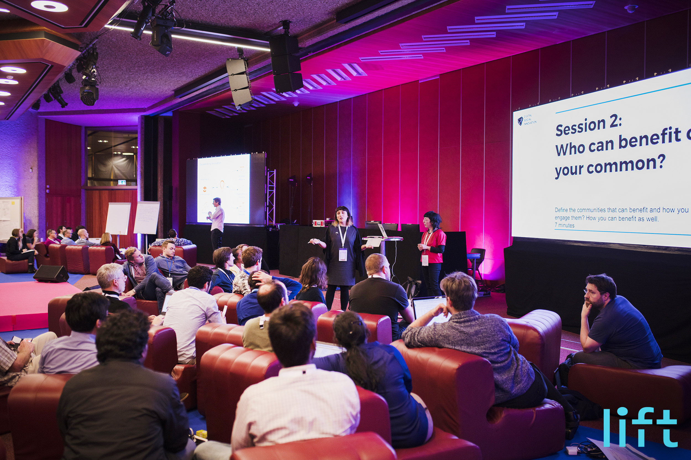

Workshops
The DSI experimental training programme
Starting in April 2016, DSI4EU organised an experimental training programme to engage one of the target audiences of DSI4EU (i.e. makers and members of the open hardware and design community) in key DSI events and places across Europe.

The training programme has been delivered in the format of workshops, lectures and online meetups. The training programme involved two different target groups:
-
Representatives of communities, associations and organisations that actively work or collaborate on DSI projects in Europe;
-
Individuals who are developing technologies within the so-called Maker Movement
While the first target group includes people with knowledge of the development of projects for the societal good, the latter can be considered as a key player in the field of DSI, because of its interest and expertise in the development of bottom-up technologies for tackling social challenges through open hardware and open design approaches.
Two main tools have been designed to guide the training programme and to facilitate mentoring activities during the workshop sessions: the DSI Scale and the Peer Knowledge Tool. The DSI Scale is a conceptual tool for selfassessment and assessment of DSI projects based on values such as knowledge sharing, technological openness and societal impact. The Peer Knowledge Tool is a conceptual survey that aims to capture best practices and problemsolving tactics within the field of DSI.
The tools intend to support participants in discussing and exploring strategies to scale their endeavours by stimulating a collaborative reflection by: sharing best practices, namely problem-solving tactics applied during the development of a project; sharing scalability strategies, namely actions for improving aspects of a project to reach a better impact.
Cities and editions
Downloads
Or download them individually:
Presentation slides Mentoring guidelines